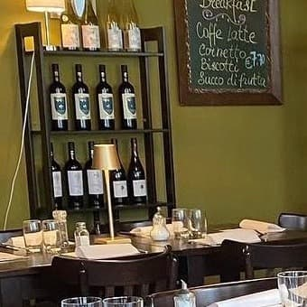
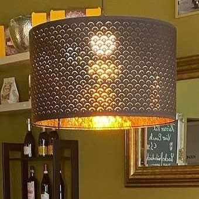
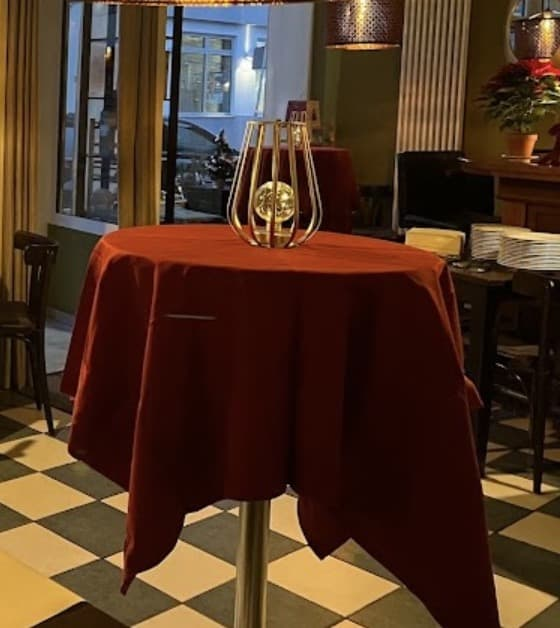

Einblicke
Olivgrüne Wände, goldene Spiegel, Kerzenlicht und der Schachbrettboden. So sieht es bei uns aus.







Olivgrüne Wände, goldene Spiegel, Kerzenlicht und der Schachbrettboden. So sieht es bei uns aus.


